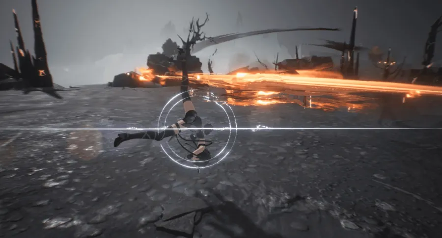

Wuthering Waves adalah sebuah game action RPG yang dikembangkan oleh Kuro Game. Game ini dikenal dengan kombinasi antara pertarungan cepat dan eksplorasi dunia terbuka. Latar ceritanya berada dalam dunia pasca-apokaliptik yang dipenuhi dengan elemen fantastis dan misterius. Pemain mengikuti petualangan karakter utama yang berusaha mengungkap kebenaran di balik peristiwa besar yang telah mengubah dunia mereka Game ini menawarkan narasi yang mendalam dengan karakter-karakter unik yang memiliki latar belakang dan tujuan masing-masing. Pertarungan dalam Wuthering Waves bersifat dinamis, dengan sistem kombinasi serangan yang memungkinkan pemain untuk melakukan serangan beruntun dan menggunakan kemampuan spesial. Selain itu, pemain dapat menjelajahi lingkungan yang luas dan terperinci, menemukan rahasia, item, dan misi tambahan. Grafik yang digunakan dalam game ini sangat menawan, memanfaatkan teknologi grafis modern untuk menciptakan visual yang indah dan mendetail. Secara keseluruhan, Wuthering Waves menarik perhatian penggemar genre RPG dengan menawarkan pengalaman menantang dan memuaskan dalam aspek pertarungan dan eksplorasi.
Fitur Utama dan Media:
| Fitur | Deskripsi |
|---|---|
| Gameplay Aksi Dinamis | Pertarungan dalam Wuthering Waves mengutamakan kecepatan dan keterampilan, dengan sistem pertarungan yang memungkinkan pemain untuk menggunakan serangan cepat dan kombinasi gerakan yang halus. |
| Karakter yang Dapat Dimainkan | Pemain dapat memilih dari berbagai karakter, masing-masing dengan kemampuan dan senjata unik. Karakter-karakter ini dapat diupgrade dan disesuaikan untuk menciptakan gaya bermain yang sesuai dengan preferensi pemain |
| Sistem Kombinasi Serangan | Wuthering Waves mengusung sistem kombinasi serangan yang memungkinkan pemain untuk melakukan serangan beruntun dan menggunakan kemampuan spesial yang menakjubkan. |
| Dunia yang Indah dan Terperinci | Grafik dalam game ini sangat menakjubkan, menampilkan lingkungan yang luas dan berbagai detail yang membuat dunia terasa hidup dan dinamis. |
| Fitur Kooperatif | Game ini juga memungkinkan pemain untuk bermain dalam mode kooperatif dengan teman-teman, menjadikan pengalaman bermain lebih seru dan menantang. |
| Speksifikasi |
|
| Link | https://wutheringwaves.kurogames-ads.com/ |
| Gambar Gameplay |  |
| Trailer Game | Link You tube |